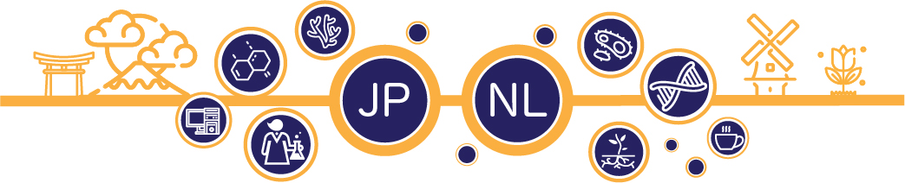

Japan-Netherlands Life Science webinars
Since international travelling and in-person meetings remain restricted, students and early-carrier scientists may have less
chance to communicate science and establish connections with the international community.
Thus, we launched a series of monthly online seminars, where students and postdocs from several institutions in Japan and
Netherlands will present, discuss and have some time for the informal discussions.
The main theme of these webinars will be Microbial Chemical Ecology and related fields.
Do you want to participate?
If you are interested joining webinars please register using following
Google Form.
Organizers
These webinar series is organized by Prof. Dr. Dana Ulanova from the Kochi University and
Dr. Paolina Garbeva from the NIOO-KNAW.